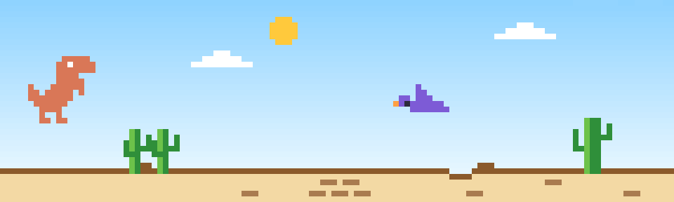

Day 7
Chrome's dino game, in colour, right above the Claude Code prompt. It shows up while Claude works and goes away when Claude is done.

A frame drawn by the game's own code.
/plugin install dino-wait --marketplace tirupathipodugu/ideas
Type it at a Claude Code prompt in your terminal, answer y to add the marketplace, then pick a scope.
/dino shows or hides it any time.